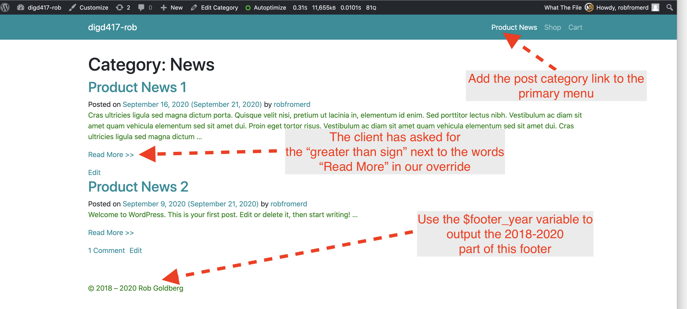
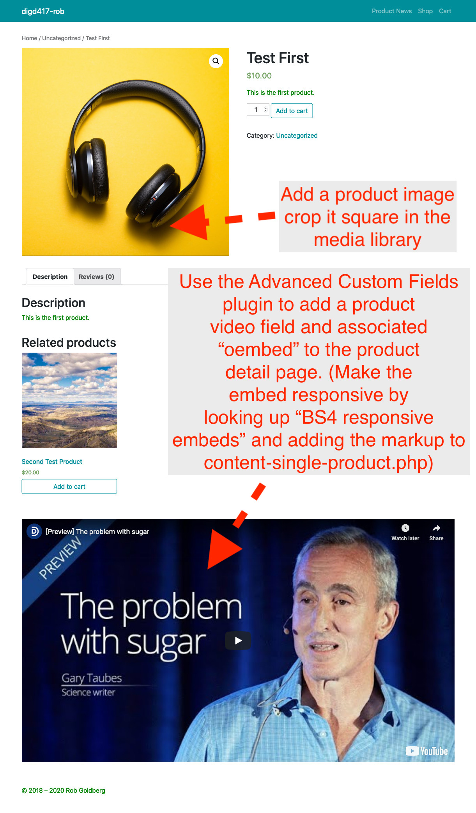

Code Samples for Week 5
Code Sample 5.1: Overriding the Parent Theme
Setting a Static Home Page with a Woocommerce Product Teaser
- Create a page called "home" from the dashboard
- Create at least four products and give them square product images : Look for a "set product image" in field that you can populate with an image from the WordPress Media Library, which lets you crop images to a a square aspect ratio.
- From within the Settings > Reading in the dashboard, set home to be the "static" home page.
- Use the Woocommerce documentation (https://docs.woocommerce.com/document/woocommerce-shortcodes/#section-11) to create a shortcode that shows four products on the home page in a row of four columns, hint: these shortcodes do not need all the optional parameters shown:
Modifying the Read More Links and the Footer
- Add the code block from the code sample below to the end of your CHILD theme's functions.php file.
- This code overrides two functions in the PARENT theme: one that creates the site information notice in the footer and one that creates the "Read More" buttons in post archive pages.
- For this exercise, let's imagine your site will have a "Product News" section: Go the Dashboard and create two fake news posts -- You can just retitle any existing posts or create new ones, it does not matter. Add a News category to each post via the post edit screen.
- Add the news category to the primary menu and change the navigation label to Product News.
- Our imaginary client is almost happy but now they have asked us to add two "greater than" symbols after the read more links on what they are calling the "Product News" page, which is really just the built-in archive page for the news category. This requires you to find out what the "html entity" is for the greater than sign and then place it twice inside the code that we output to make our read more links.
- Finally the client wants the copyright notice to read © 2018 – whatever the current year is. Luckily we already have a PHP variable in our code for the current year which we already have defined in our code (
$footer_year). All we need to do is place that variable in the right place within the echo statement.

Adding a YouTube Embed Field to the Product Detail Page
- Install the Advanced Custom Fields plugin by going to Plugins > Add New
- From within ACF add a new Field Group called YouTube Embed. Inside the group add an oembed field also called YouTube Embed, making sure the "machine" name is "youtube_embed"
- Under location within ACF, choose show this field if post type is equal to product.
- If you edit a product post, you will now see the custom field for YouTube embed. Add the "share" link from a suitable-for-work video on YouTube.
- Now because your post template part needs to reference that field, paste in the code sample below between the comments provided in the file that I posted to Slack.
- One last thing: You need the Boostrap 4 markup that is required to make this embed responsive. Look it up and wrap the
iframe in our code with the appropriate markup BY using TWO echo commands, one before where the iframe gets emitted and one after.

Filtering the Navigation Menu to Add a Search Bar that Collapses Down with Other Menu Items
- Add the filter below to your functions.php (remembering to make sure this filter has your correct primary menu location)
- Add some unique text like "Aardvark" to two of your products and check if it is working.
- The client has asked for a magnifying glass instead of the word "Search" next to the search input.
- Fix this by going to this page https://fontawesome.com/v4.7.0/icon/search and thinking . . .